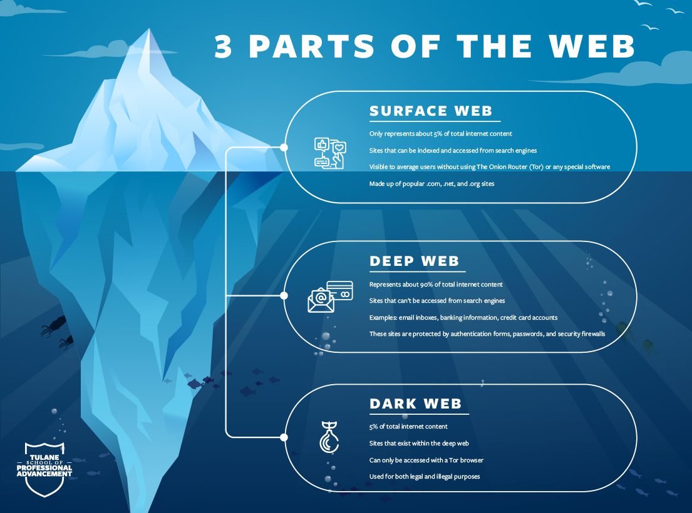

What is dark web
Intially Let's begin with the basic understanding of Dark web , well it's one of those surface or layer of the internet which is not recommended to normal internet users . The dark web is a part of the internet that is hidden and not easily accessible through normal web browsers or search engines. It requires special software or settings to access it. This part of the internet is designed to be anonymous, meaning that users can engage in activities without revealing their true identity. Addition to this Dark web is also a part of WWW and Onion Router is used to access the dark website which is called Tor network . It is the playground for criminal to fetch the new targets and deals .
What is a Tor browser ?
TOR stand for The Onion Router protocol , this is completely different from conventional broswers like google , brave , opera etc .
This browser have completely different network and it's internet traffic is encrypted . this is designed in such a way that it does not
allow to trace and decrypt the path and information of the user . this is the open source browser which is used to access dark web.
LOGO of TOR browser is as follows :

How does the dark web works ?
Intially when we connect to our tor network it encrypt the information of user and travels our internet to different multiple server and location which makes
it is difficult to trace back .
The websites on dark web have profoundly different which cannot be accessed with normal network and protocols . Having VPN
connection while working on tor networks is considered as a good practice , because when ever we visit a website so our IP address is registered in the servers
and backend ,
So with the help of this attackers can easily fetch our location , device and many more details so to prevent such situation we should have VPN
connection to avoid such circumstances .

Significance of dark web in Cyber Security
Dark web plays a crucial role in cyber security domain .Cybersecurity professionals can use the dark web to gather threat intelligence on the latest attack techniques,
tools, and vulnerabilities , As it's the place where we observe large number of cybercrimes and hacker also sell the confidential data's of the different companies .
Cybersecurity professionals can use the dark web to conduct penetration testing, simulating attacks on their own systems to identify weaknesses and vulnerabilities.
Cybersecurity professionals can share information on the dark web about new threats and vulnerabilities with other professionals in the field. This can help to identify
new attack methods and to develop effective mitigation strategies.